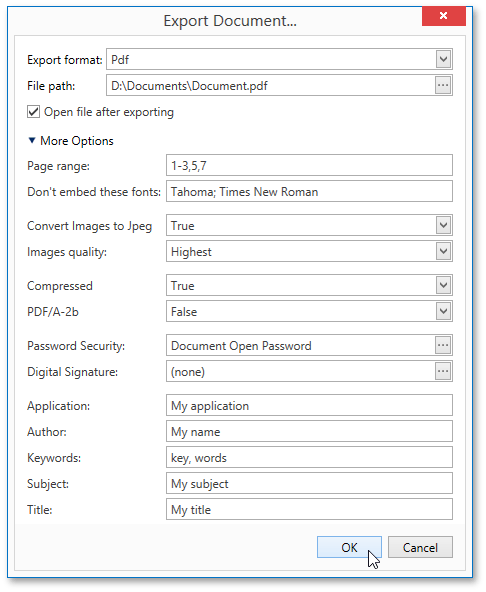
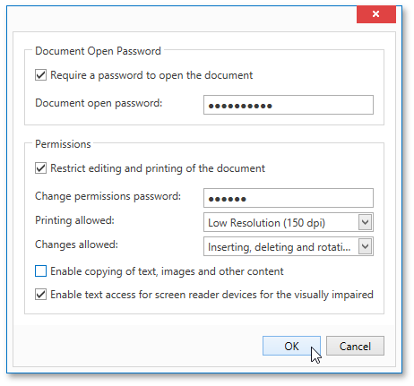

PDF-Specific Export Options
When exporting a document, you can define the following PDF-specific export options.

General Options
Page range
Specifies a range of pages which will be included in the resulting file. To separate page numbers, use commas. To set page ranges, use hyphens.
Don't embed these fonts
Specifies font names which should not be embedded into the resulting file to reduce the file size. To separate fonts, use semicolons.
Convert Images to Jpeg
Specifies whether all bitmaps contained in the document should be converted to JPEG format during export to PDF.
Images quality
Specifies the document's image quality level. The higher the quality, the bigger the file, and vice versa.
Compressed
Specifies whether the resulting file should be compressed.
PDF/A-2b
Specifies whether to enable document compatibility with the PDF/A-2b specification.
Password Security Options

These options allow you to adjust the security options of the resulting PDF file (e.g. enable open document, editing, printing and copying protection, and specify what changes are allowed).
Signature Options
If an X.509 certificate is applied to your report, you can maintain its options using the Signature Options property of the report PDF Export Options.
Additional Options
You can also fill the Application, Author, Keywords, Subject, and Title fields. These options specify the Document Properties of the created PDF file.